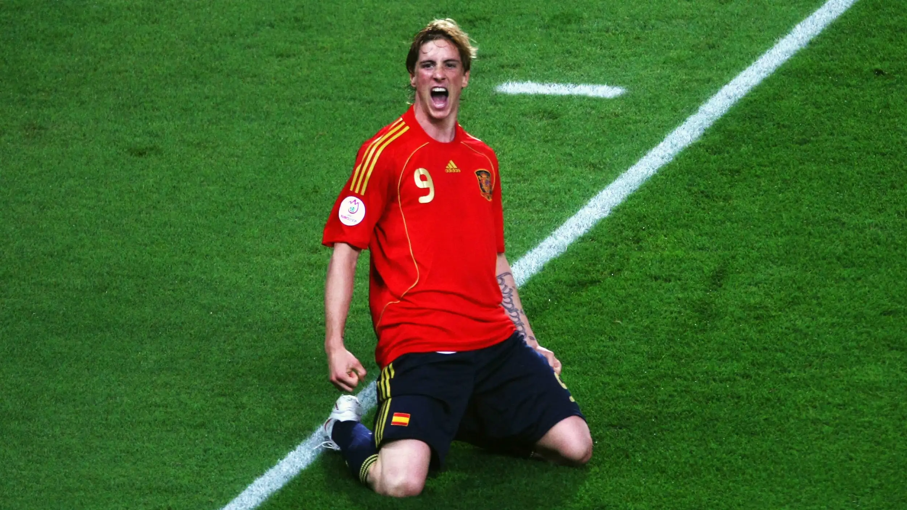

La Revolución del 2008
La Eurocopa obtenida por la selección española de fútbol en 2008 no solo supuso el segundo título continental en la historia de nuestro país tras 44 años de sequía, sino que transformó la mentalidad de los futbolistas nacionales, demostrando que España podía ganar en el máximo escenario europeo imponiendo un estilo propio y revolucionario.
- El Camino Perfecto: España firmó un torneo inmaculado en Austria y Suiza, ganando los tres partidos de la fase de grupos ante Rusia, Suecia y Grecia. Tras romper el maleficio en cruces, goleó de nuevo a Rusia en semifinales y completó un campeonato invicto con un despliegue de fútbol vistoso, coral y dominador.
- Épica ante Italia y Alemania: El torneo se consagró en dos escenarios clave. El 22 de junio, España rompió la "maldición de cuartos" eliminando a Italia en una agónica tanda de penaltis gracias a los paros de Iker Casillas. En la gran final del 29 de junio en Viena, Fernando Torres desató la locura al anotar el definitivo 1-0 ante Alemania tras ganar en carrera a Lahm y picar el balón con maestría.
- La "Generación de los Bajitos": El equipo estaba dirigido por Luis Aragonés, quien tomó la audaz decisión de prescindir de los viejos galones para dar el control total a una hornada de futbolistas con un talento técnico excelso. Destacaban el cerebro Xavi Hernández, Andrés Iniesta, David Silva, Cesc Fàbregas, el baluarte defensivo Marcos Senna y la dupla letal de ataque formada por David Villa y Fernando Torres.
- Máxima Eficacia: La selección se caracterizó por un control absoluto del balón a través del pase corto y la triangulación. David Villa se coronó como el máximo artillero del torneo con 4 goles esenciales, mientras que la zaga y un monumental Iker Casillas blindaron la portería, sin encajar un solo gol en contra en toda la fase de eliminatorias directas.
- La Identidad: Este título europeo enterró para siempre el mito de la "furia española" y los complejos históricos de inferioridad física. Sentó las bases definitivas del estilo del Tiki-Taka, una filosofía de posesión y madurez competitiva que heredaría el fútbol nacional para encadenar de forma inédita el Mundial 2010 y la Eurocopa 2012.
